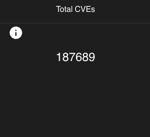
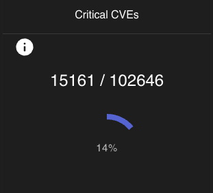
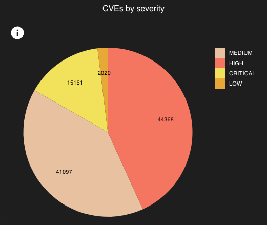
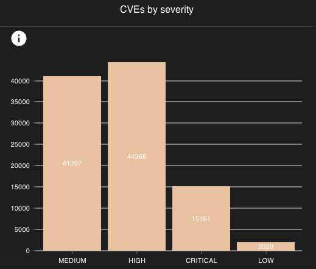
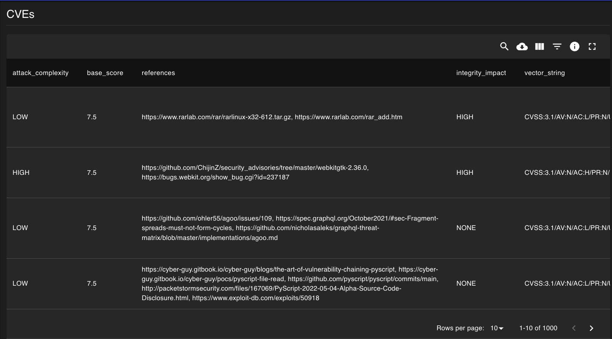
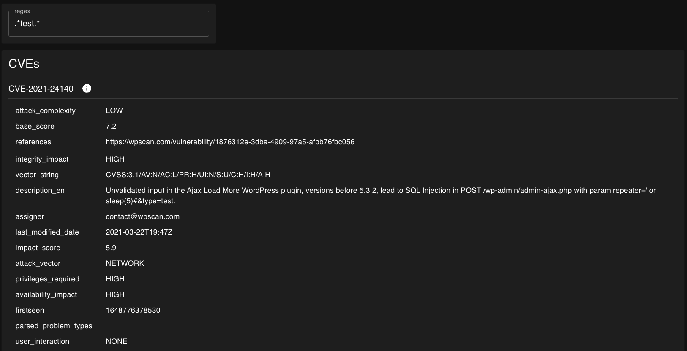
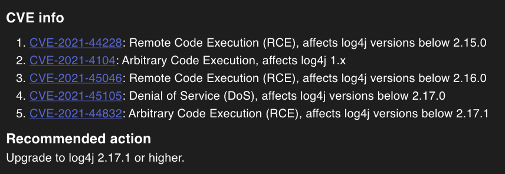
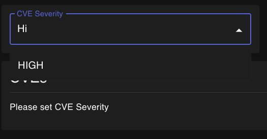
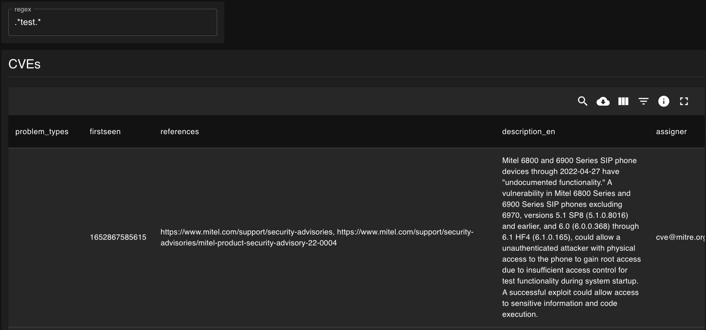
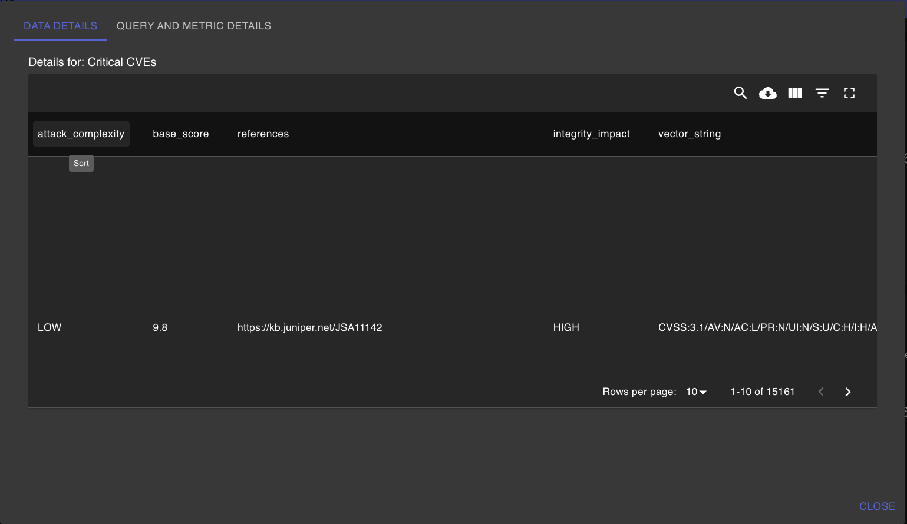

Dashboard Configuration¶
Configuration Storage¶
Report and dashboard configurations are stored in DynamoDB, not in the YAML configuration file.
The YAML file contains a top-level queries dict (used only by scheduled_queries references), scheduled_queries, a dashboard pointer, a reports section, and a toolsets section — all used to seed DynamoDB.
Each report has its own queries dict for named Cypher strings used by its panels.
To populate DynamoDB from the YAML file during initial setup or development:
make seed_dashboard
The dashboard key in the YAML file is a string that names a report in the reports section to use as the default dashboard:
dashboard: dashboard # pointer to the "dashboard" entry in reports
reports:
dashboard:
name: Dashboard
queries:
cves-total: |-
MATCH (c:CVE)
RETURN count(c.id) AS total
rows:
- name: Overview
panels:
- cypher: cves-total # reference to a named query in this report's queries dict
type: count
caption: Total CVEs
size: 3
- cypher: |- # direct Cypher string — no named reference needed
MATCH (c:CVE)
RETURN count(c.id) AS total
type: count
caption: Total CVEs (direct)
size: 3
To change the dashboard at runtime, use the Reports list in the UI (see below) or call the API directly:
curl -X PUT /api/v1/reports/<report_id>/dashboard
Managing Reports¶
Reports can be created, edited, and deleted at runtime through the Seizu UI without modifying the YAML file or restarting the service.
Permissions: Creating and editing reports requires the
reports:writepermission (seizu-editororseizu-admin). New reports and clones start as private drafts visible only to their owner. Owners withreports:writecan publish or unpublish their own reports; publishing updates report metadata and does not create a new version. Deleting reports requiresreports:delete. Setting the default dashboard requiresreports:set_dashboardand the selected report must be public. Pinning reports requiresreports:write. Restoring a historical version also requiresreports:write. Users with only theseizu-viewerrole can view public reports and history but will not see the New report button, and write/delete/restore actions in the ⋮ menu and version view will be disabled.
Reports list¶
Navigate to Reports in the sidebar to view all reports. From the list you can:
Click a report name to view it.
Open the ⋮ menu on any row to Edit, View history, Publish / Unpublish, Set as dashboard, Pin to sidebar / Unpin from sidebar, or Delete a report.
A Draft or Public badge shows the report visibility.
A Pinned badge is shown inline on reports that are pinned to the sidebar.
A Dashboard badge is shown inline on whichever report is currently set as the dashboard.
Creating a report¶
Click New report on the Reports list page, enter a name, and confirm. An empty report is created immediately and opened in edit mode so you can start adding rows and panels.
Version history¶
Every save creates a new numbered version; the full history is always available. To access it:
Click History (top-right when viewing a report), or
Choose View history from the ⋮ menu in the Reports list.
The history page lists all versions newest-first, showing the version number, save date, author, and save comment. The current (latest) version is labeled current.
Click a version number to open a read-only view of that version. From the version view you can:
Use the ← v_N_ / v_N_ → buttons in the toolbar to step through older and newer versions without returning to the list.
Click Restore this version to save the historical config as a new latest version. The button is disabled when viewing the current version, or when you do not have the
reports:writepermission.
Restoring a version never deletes history — it creates a new version whose config matches the restored one.
Editing a report¶
Click Edit report (top-right when viewing a report) or choose Edit from the ⋮ menu in the Reports list. Edit mode provides:
Named Queries — a collapsible section for defining reusable Cypher strings that panels can reference by key.
Rows — add, rename, and delete rows. Rows hold panels in a horizontal grid.
Panels — within each row, panels can be dragged to a new position (within a row or to a different row) and resized using the − / + column controls (1–12 grid columns). Use the pencil icon to open the panel editor, or the trash icon to remove a panel.
Add panel — opens the panel editor where you select the panel type and fill in the relevant fields. The form adapts to show only the fields applicable to the chosen type.
Click Save version to commit your changes. Every save creates a new numbered version; existing versions are never overwritten.
Deleting a report¶
Choose Delete from the ⋮ menu in the Reports list and confirm. This permanently removes the report and all its versions. If the report was set as the dashboard, the dashboard pointer is also cleared.
Panels¶
Seizu supports various panel types that can be used to visualize graph data. See the Panel schema for more detailed info about specific fields.
count¶
To simply display a count of a particular query, use a count panel.

Field |
Description |
|---|---|
cypher |
A cypher query to use for this panel. Either a key from the report’s |
details_cypher |
A cypher to use for displaying a table view of the data, in a details view. Either a key from the report’s |
params |
A list of parameters to pass into the query. See the PanelParam schema for more info. |
caption |
The caption to show as the title of this panel. |
type |
The type of panel. |
size |
The width of this panel. |
Example¶
- cypher: cves
details_cypher: cves-details
caption: Total CVEs
type: count
size: 3
progress¶
To display a progress wheel, and x/y display of a particular query, use a progress panel.
By default, this panel will color the progress data based on a threshold of <70% error, >70% <100% primary, 100% success.

Field |
Description |
|---|---|
cypher |
A cypher query to use for this panel. Either a key from the report’s |
details_cypher |
A cypher to use for displaying a table view of the data, in a details view. Either a key from the report’s |
params |
A list of parameters to pass into the query. See the PanelParam schema for more info. |
caption |
The caption to show as the title of this panel. |
type |
The type of panel. |
threshold |
The lower threshold percentage to consider this result an error. Set to |
size |
The width of this panel. |
Example¶
- cypher: cve-by-severity
details_cypher: cve-by-severity-details
params:
- name: severity
value: CRITICAL
caption: Critical CVEs
type: progress
threshold: 0
size: 3
pie¶
To display a pie graph, use a pie panel.

Field |
Description |
|---|---|
cypher |
A cypher query to use for this panel. Either a key from the report’s |
details_cypher |
A cypher to use for displaying a table view of the data, in a details view. Either a key from the report’s |
params |
A list of parameters to pass into the query. See the PanelParam schema for more info. |
caption |
The caption to show as the title of this panel. |
type |
The type of panel. |
pie_settings |
An object of settings specific to pie panels. |
pie_settings.legend |
Orientation of the legend. |
size |
The width of this panel. |
Example¶
- cypher: cves-by-severity-as-rows
caption: Critical CVEs
type: pie
pie_settings:
legend: column
size: 3
bar¶
To display a bar graph, use a bar panel.

Field |
Description |
|---|---|
cypher |
A cypher query to use for this panel. Either a key from the report’s |
details_cypher |
A cypher to use for displaying a table view of the data, in a details view. Either a key from the report’s |
params |
A list of parameters to pass into the query. See the PanelParam schema for more info. |
caption |
The caption to show as the title of this panel. |
type |
The type of panel. |
bar_settings |
An object of settings specific to bar panels. |
bar_settings.legend |
Orientation of the legend. |
size |
The width of this panel. |
Example¶
- cypher: cves-by-severity-as-rows
caption: Critical CVEs
type: bar
bar_settings:
legend: column
size: 3
table¶
To display rows in a paged table, use a table panel.

The table panel auto-detects columns from the query results. It supports three return formats:
Named columns —
RETURN n.name AS name, n.org AS org(explicitcolumnsconfig maps to these)Map —
RETURN {name: n.name, org: n.org}(or with any alias, e.g.AS row)Node —
RETURN n(properties are unwrapped automatically)
When columns is specified in the panel config, those column names are read directly from the record keys.
Field |
Description |
|---|---|
cypher |
A cypher query to use for this panel. Either a key from the report’s |
columns |
Optional list of |
params |
A list of parameters to pass into the query. See the PanelParam schema for more info. |
caption |
The caption to show as the title of this panel. |
type |
The type of panel. |
size |
The width of this panel. |
Example¶
- name: CVEs
panels:
- cypher: cve-search
params:
- name: cveId
input_id: cve-id-autocomplete-input
type: table
size: 12
vertical-table¶
To display rows in a less-dense, vertical per-row view, use a vertical-table panel.
Note: the caption per-row is set via the table_id field, and if unset, will display undefined

Supports the same return formats as the table panel (named columns, map, or bare node).
Field |
Description |
|---|---|
cypher |
A cypher query to use for this panel. Either a key from the report’s |
params |
A list of parameters to pass into the query. See the PanelParam schema for more info. |
caption |
The caption to show as the title of this panel. |
type |
The type of panel. |
table_id |
The attribute in the result row to use as a caption for each row. If not set, row captions will show as |
size |
The width of this panel. |
Example¶
- name: CVEs
panels:
- cypher: cve-search
params:
- name: cveId
input_id: cve-id-autocomplete-input
type: vertical-table
table_id: id
size: 12
graph¶
To display graph data as an interactive node-link diagram, use a graph panel.
The panel has three tabs:
Graph — interactive node-link visualization. Only shown when the query returns graph-compatible data (see formats below).
Table — tabular view of the raw results. Always available. Columns are auto-detected from the result shape.
Raw — JSON dump of the full API response. Always available.
Clicking a node or relationship opens a collapsible detail panel on the right showing its properties. Clicking the canvas background deselects and returns to a graph summary view. The detail panel can also be toggled via the info icon at the top of the toggle handle.
The Graph tab supports two query return formats:
Option 1 — explicit map (full control over labels and grouping):
MATCH (org:GitHubOrganization)-[:OWNER]->(repo:GitHubRepository)
WITH
collect(DISTINCT {id: id(org), label: org.id, group: 'Org'}) +
collect(DISTINCT {id: id(repo), label: repo.name, group: 'Repository'}) AS nodes,
collect({source: id(org), target: id(repo), type: 'OWNER'}) AS links
RETURN {nodes: nodes, links: links}
Option 2 — RETURN path (simplest; labels use the node_label property, defaulting to name then node id):
MATCH path = (:GitHubOrganization)-[:OWNER]->(:GitHubRepository)
RETURN path LIMIT 100
If the query does not return graph-compatible data (e.g. RETURN n or a plain property query), the Graph tab is hidden and the Table tab is shown by default.
Field |
Description |
|---|---|
cypher |
A cypher query to use for this panel. Either a key from the report’s |
params |
A list of parameters to pass into the query. See the PanelParam schema for more info. |
caption |
The caption to show as the title of this panel. |
type |
The type of panel. |
graph_settings |
An object of settings specific to graph panels. |
graph_settings.node_label |
The node property to display as the node label. Defaults to |
graph_settings.node_color_by |
The node property to use for color grouping. Defaults to |
size |
The width of this panel. |
Example¶
- cypher: github-org-repos
caption: GitHub Repositories
type: graph
graph_settings:
node_label: name
node_color_by: group
size: 12
markdown¶
To render markdown, use a markdown panel.

Standard Markdown is supported, including bold, italic, headings, ordered and unordered lists, links, code spans, fenced code blocks, and tables.
Tables are rendered using MUI components with themed borders and a highlighted header row.
Heading levels in the Markdown source are shifted down by one (## renders as <h3>, etc.) so they fit naturally within the panel hierarchy.
Field |
Description |
|---|---|
markdown |
The markdown content to render. Supports headings, lists, links, code, and tables. |
type |
The type of panel. |
size |
The width of this panel. |
Example¶
- markdown: |-
## CVE info
1. [CVE-2021-44228](https://security.snyk.io/vuln/SNYK-JAVA-ORGAPACHELOGGINGLOG4J-2314720): Remote Code Execution (RCE), affects log4j versions below 2.15.0
1. [CVE-2021-4104](https://security.snyk.io/vuln/SNYK-JAVA-LOG4J-2316893): Arbitrary Code Execution, affects log4j 1.x
1. [CVE-2021-45046](https://security.snyk.io/vuln/SNYK-JAVA-ORGAPACHELOGGINGLOG4J-2320014): Remote Code Execution (RCE), affects log4j versions below 2.16.0
1. [CVE-2021-45105](https://security.snyk.io/vuln/SNYK-JAVA-ORGAPACHELOGGINGLOG4J-2321524): Denial of Service (DoS), affects log4j versions below 2.17.0
1. [CVE-2021-44832](https://security.snyk.io/vuln/SNYK-JAVA-ORGAPACHELOGGINGLOG4J-2327339): Arbitrary Code Execution (RCE), affects log4j versions below 2.17.1
## Recommended action
Upgrade to log4j 2.17.1 or higher.
type: markdown
size: 12
Named Queries¶
Reports can define a queries dict of named Cypher strings.
Panel cypher and details_cypher fields are resolved against this dict at render time.
If the field value is not a key in the dict, it is used as a literal Cypher string — allowing panels to embed queries directly without adding them to the queries dict first.
reports:
dashboard:
name: Dashboard
queries:
cves-total: |-
MATCH (c:CVE)
RETURN count(c.id) AS total
rows:
- name: Overview
panels:
# Named reference — resolved from the queries dict above
- cypher: cves-total
type: count
caption: Total CVEs
size: 3
# Direct Cypher string — no entry in queries needed
- cypher: |-
MATCH (c:CVE)
RETURN count(c.id) AS total
type: count
caption: Total CVEs (direct)
size: 3
Inputs¶
Reports can define inputs that can be used to pass parameters into queries used in panels in the report. These will be rendered at the top of the report, in the order specified in the configuration.
autocomplete¶
An autocomplete input can be used to use results queried from the graph as inputs to panels.
End-users can select through a dropdown list of the values, or can type to search/autocomplete a value.

Field |
Description |
|---|---|
input_id |
An ID for this input, that can be referenced from the params section of a panel. |
cypher |
A cypher query used to return the relevant data. This is not a reference to a query, but the actual query to run. It’s recommended to use |
default |
A dictionary with the default |
type |
The type of input. |
size |
The width of this input. |
Example¶
- input_id: cve-severity-autocomplete-input
cypher: >-
MATCH (c:CVE)
RETURN DISTINCT c.base_severity AS value
label: CVE Severity
type: autocomplete
size: 2
text¶
A text input can be used for user-defined input for panel query parameters.
Panel re-renders are debounced: connected panels only update 300 ms after the user stops typing, rather than on every keystroke.

Field |
Description |
|---|---|
input_id |
An ID for this input, that can be referenced from the params section of a panel. |
default |
A dictionary with the default |
type |
The type of input. |
size |
The width of this input. |
Example¶
- input_id: cve-id-regex
label: Regex
type: text
size: 2
Example Configuration¶
All panel types with a cypher query have an info button that shows extra details about the panel, such as the query used, the parameters to the query, metrics that may be pushed with it, etc.
For count, progress, pie, bar, graph, and vertical-table panels, the info button appears in the top-right corner of the panel and is only visible on hover.
For table panels the info button is always visible, inline with the panel header.
Non-table panel types that also have a details_cypher configured will show a data drill-down table as the first tab in the details view.

Example configuration
.. literalinclude:: ../../../.config/dev/seizu/reporting-dashboard.yaml :language: yaml